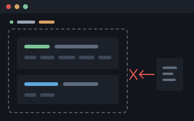

Shoddy Documentation · Fettler
File, search and edit tools for a model and a script. One program, two front ends, and no shell between it and the file.
An assistant given Fettler cannot go wandering. Everything outside the boundary is denied. Every path it touches must sit inside a tree — a folder you named ahead of time. Outside those trees, everything is refused: writing, reading, listing, even learning that a file exists. There is no current directory to change. No path can climb out of a tree. There is no shell to sneak past it with. So the assistant cannot wander into a sibling project, an old copy, or your home directory, read the wrong thing, and then answer from it with complete confidence.

fettlebounded file tools · no shell in betweenInside the boundary, it does the work an assistant actually does on source files. It can find a file, search its contents, read it, write it, edit it, move it, copy it, and delete it. It can also run a named build task. It is written in C#, ships from this repository, and installs as one file. And nothing it does changes how you work. Your shell, your file explorer, your editor, and your git stay exactly as they were.
fettle. The command uses the verb form because
fettle move a.txt b.txt reads as an instruction, and
fettler move does not. Both spellings are correct. Neither
is a typo.Note This page explains what Fettler is and what it guarantees. It asks you to type nothing. To have it working in about five minutes instead, go straight to the quick start. The reference behind it is installing it and Fettler in a project.
A fettler kept a mill's carding engines in order. Carding combs tangled fibre into a loose web, ready for spinning. The engine does it with rollers wrapped in card clothing — a dense bed of fine wire teeth. Those teeth clog with matted fibre, oil, and dirt, and a clogged card cards nothing. The fettler stripped the teeth, cleaned them, set them back to their proper height and spacing, and repaired what had bent.
He made no cloth. Not a yard of it. His whole job was keeping the cloth-making machines in a state where they could make it. That is this tool's relationship to everything around it. Fettler compiles nothing, runs nothing, and produces no program of its own. It keeps the material in order so the machines that do produce something can.
To fettle is plain English for exactly that: to put right, to make ready, to set in order. The word survives in the phrase in fine fettle. So the name carries its own meaning without a glossary — more than most tools named after a trade can say.
Three things, in the order they matter: it is faster, it is repeatable, and it is bounded.
search hands back
tree:path:line:column. read numbers every line
it returns and states the file's hash — a short fingerprint of the
file's exact contents. Those are exactly what edit asks
for: --insert-after 412, --delete 150-151,
--between 120-140, --expect HASH. Nothing has
to be re-read to work out where something was. No anchor text has to be
rebuilt from memory and then refused for not matching.
find and search exist to feed the other
verbs, not to sit beside them. A refused edit is the expensive
failure: one whole round trip spent, and usually a second one re-reading
the file to find out why.read takes several paths
at once. search takes several patterns.bin,
obj, .git, artifacts and
node_modules are excluded by default. In this repository,
**/*.cs matches 196 files, and only 119 of them are ones a
person wrote.run holds no lock. A read answers while a build runs, and
the build can be cancelled part-way.replace makes one substitution everywhere it appears, with
a dry run first. batch sends a whole sequence of operations
as one exchange.search says which line. read gives
that line a number and gives the file a hash. edit --expect
hands the hash back, and the write lands only if this is still the file
that was searched. Break the chain anywhere — you save in your
editor, a build regenerates the file, another edit gets there first
— and the answer is stale (exit 6), not a write
at a line number that has since moved. No verb here is a separate
facility. The finder feeds the reader, the reader feeds the editor,
and the hash proves all three were talking about the same file.--expect hash stopped matching the moment
the first landed.&& versus ;, error
output treated as fatal — has nowhere to live.com.apple.quarantine flag — the markers Windows
and macOS put on downloaded files — survives the write, or the
answer says it did not.denied means the operating system said no.
refused means Fettler did.Rename a C# type in this repository's Fettler code and you touch
200 occurrences across 23 files. That number is measured, not
estimated — fettle search counted it. This is the
change nobody does by hand, and every assistant is asked to do
anyway.
| Built-in file tools | Fettler | |
|---|---|---|
| Calls | one search, then a read and an edit for each file — 47 | search, replace --dry-run, replace — 3 |
| Context spent | 23 whole files pulled through it | the matching lines |
| If it fails at file 15 | 14 files renamed, 9 not: a tree that no longer compiles, half-changed — and nothing says which half | nothing is written unless all 23 resolved first; if a write then fails, it names the file it stopped at and how many were already done |
| Per-file properties | whatever the writer happened to emit | each file keeps its own encoding, line endings and execute bit |
The round trips are the cheap half of that. The 23 files resolve together or not at all. Every file is read. Every file is checked against the hash it was read at. Every substitution is located. Only then does the first byte move. A permission the tree does not grant, a file that changed underneath, an anchor that no longer matches — any of these stops the whole batch, with nothing written and the tree exactly as it was.
The writing itself cannot be promised, so it is reported instead. A full disk, or a file another program holds open, can fail halfway through any batch. No tool prevents that. What a tool can do is leave you knowing. This is the part that actually costs an afternoon. The built-in tools stop somewhere in the middle and say nothing about where. The tree is half-changed, and the only way to find out which half is to look, file by file, with the original search already out of date. Fettler answers from both ends instead. The dry run lists what will change, in order, before anything moves. A failed write names the file it stopped at and how many were already written. Those two facts identify the survivors exactly. And a batch that passed its dry run has already had every reason it could refuse taken off the table.
Fettler exists to bound what an assistant can do to your tree — and what it can see of everything else. Everything above on this page is in service of that.
--root on a command line grants
list read and can never grant more, at any level, with no
override.execute is never a default — in any tree,
including the one the configuration sits in..fettler.json and .fettler.local.json are
refused by every write path at every permission level. The refusal has
its own outcome, governed, exit 11. Without this rule,
the permission model is decoration..mcp.json, .claude/settings.json,
.claude/settings.local.json and
.vscode/mcp.json are refused on the same terms. A model
that can edit its own deny list has no deny list. And no boundary has to
be breached to reach one: a project's assistant configuration lives in
the project. setup still writes them, because it uses plain
file IO and resolves no path through the boundary.credential, exit 12. It judges the
change, not the file, so a config that already holds a key
stays editable.list is simply not there, as far as
find and search can tell.fettle doctor reports what still goes round it
— a pre-approved sed -i, an allow on a built-in
editor, an instructions file that has never heard of Fettler.The boundary binds the tool, not you. Fettler is one executable that answers when called. It is not a supervisor, a policy agent, or a filesystem layer. Nothing in the list below changes on a machine that has it installed.
| Your… | What Fettler does to it |
|---|---|
| shell, and everything you run in it | nothing. rm, sed, git and every other command work exactly as before, on any path you like. |
| file explorer, editor and IDE | nothing. No lock, no index, no cache, no sidecar, no metadata of its own on any file. |
| git history and working tree | nothing. Fettler wraps no version control, and deliberately never will. |
| machine, when it is not running | nothing. No daemon, no service, no file watcher, no startup entry, no network access at all. |
| configuration | you write .fettler.json in your editor, and you can change it whenever you like. The tool's refusal to write it applies to the tool, not to its author. |
| disk, on uninstall | delete one executable. That is the whole of it. |
These are deliberately outside its scope, so a later reader does not re-open the question: version control, network transport, a trash or undo store, binary editing, language-aware editing, creating links, and setting a timestamp to a value the caller names.
Nothing outside a declared tree exists. Not writable, not readable, not listable, not knowable. A path outside every tree is refused with exit 4 — and refused identically whether or not something is actually there, so the refusal itself cannot be used to probe a disk. There is no current directory to change, no path that climbs out, and no shell to reach past it with.
Inside a tree, everything that may be done is stated, never assumed. The first question worth settling is not how this works. It is whether it can express the rule you already have in your head. Most people arrive with one of these.
| The rule you want | How it is said |
|---|---|
| Look, don't touch. Read my source; change nothing. | "can": ["list", "read"] — and it is the default for every tree the configuration file does not sit in, so you get it by saying nothing. |
| Work here, not there. Change the code, leave the requirements alone. | Two trees. The code tree grants writes; the other keeps the read-only default. |
| May add and revise, may never destroy. | create update rename without delete. This is the rule people usually want, and the one most tooling cannot express at all. |
| Not for you. This folder does not exist as far as the assistant is concerned. | "can": []. With no list it never appears in a search, and guessing the path does not help. |
| Run the build; run nothing else. | execute, plus tasks declared by name. There is no shell, so there is no anything else to reach for. |
All of that, but only under src/. | A scope — the same words, stated at a depth inside a tree. |
Every word in that table is one of seven, and section 4 defines them all. They combine freely, per tree and per folder. That is what makes "may reorganise, may not destroy" a rule you can state, rather than a thing you hope for.
A tree is a path and a set of permissions. A scope states permissions somewhere inside one. Here is a real configuration, shown to read rather than to copy — writing your own is the first step of setting up a project:
{
"trees": {
"work": {
"path": ".",
"can": ["list", "read", "create", "update", "rename", "delete"]
},
"requirements": {
"path": "../shoddy-requirements",
"can": ["list", "read"],
"scopes": {
"backlog": { "can": ["list", "read", "create", "update", "rename"] },
"backlog/cancelled": { "can": [] }
}
}
}
}That reads: work may be changed but nothing in it may be
run. The requirements tree is readable throughout. Its
backlog folder may be added to, changed, and reorganised,
but never destroyed. And backlog/cancelled is not there at
all, as far as anything can tell.
Two rules decide what a given file gets, and they are the two worth knowing before you write one of these:
cancelled sits inside backlog, so
cancelled wins there.create and
nothing else grants create and nothing else — not
even read.Paths resolve against the file, never against the caller. Read against a current directory, a relative path names a different tree from every folder you run it in. Read against the file's own directory, it names one tree from everywhere. That is what lets the file be checked in.
A tree, not a repository. A folder with no version control in
it is the ordinary case, not an exception. Nothing in the configuration,
the default names, or this page assumes a checkout, a remote, or a
.git.
A malformed configuration is refused, never fallen back from. A silent fallback usually widens the boundary.
| Verb | Grants |
|---|---|
list | appears in find and search. Absent means hidden — the path does not exist as far as anything can tell. |
read | content may be read |
create | a file or directory that is not there may be made |
update | an existing file's content may be changed |
rename | may be renamed, or moved within this scope or into a descendant of it |
delete | may be removed — and moved out of this scope, which from here is the same thing |
execute | a declared task may run with this as its working directory |
Move is two permissions, not one. Moving into a subfolder
needs rename on the source and create at the
destination. Moving out of a scope needs delete as
well, because a file that leaves is gone from here either way. That is
what makes "may reorganise, may not destroy" possible to say at all.
A move that replaces something needs delete at
the destination too, whatever the verb was called. Replacing a file
destroys it.
A recursive delete and a recursive copy reach paths nobody wrote down. That is how a protected scope gets taken anyway. So both are refused when any scope inside the target does not grant what the operation needs. The refusal names no path — saying where would tell a caller where a hidden scope is. That costs one bit of information. It buys a destructive operation refused out loud, instead of half-done in silence.
| Situation | Default |
|---|---|
| The tree the configuration file sits in | list read create update rename delete |
| Every other tree | list read — strictly read-only, overridable only in a configuration file |
execute, anywhere | never granted by default, in any tree, including the one the file sits in |
| No tree declared at all | refuse, and say how to declare one. There is no implicit current directory — with the one exception below. |
The default is decided by where the tree is, not by how its
path was spelled. "." and an absolute path to the same
folder mean the same thing.
The exception is setup and doctor, and
it is exactly two verbs wide. Both configure a machine
rather than work in a tree. Neither resolves a path through the
boundary, and both reach only a fixed, compiled-in list of well-known
configuration paths. With nothing declared, they fall back to the
current directory — read-only. That cannot widen anything:
read-only is all it grants, and no verb that touches a tree is reachable
that way. Without the exception there was no way in at all.
setup carries the scaffolder for .fettler.json,
so the file it writes was the file required to run it. And
doctor refused to diagnose the commonest broken state there
is. A configuration that is present and malformed still
refuses, for both verbs, because falling back from a broken boundary is
how a boundary silently widens.
Why there is no implicit current directory otherwise. There used to be one: with no flag and no configuration, the folder you happened to be in became a tree. That is exactly the "searching around" this boundary exists to stop. And it failed in the one direction a containment mistake must never fail in. A current directory usually sits above the tree somebody meant, so the fallback silently widened the boundary at exactly the moment nobody had stated one.
This is the load-bearing rule, and it is the answer to
--root.
| Source | May grant |
|---|---|
A .fettler.json in the tree | anything. Writing one is a deliberate, reviewable act by a person, inside the tree it governs. |
--config PATH | anything, because naming a file is the same deliberate act. |
--root PATH on a command line | list read, and nothing else, with no override. |
--root stays because the MCP server has to be launched
somehow, and because ad-hoc reading is genuinely useful. It can no
longer hand anybody write access. To write to a tree, you put a file
in it.
The single exception, and the only one: setup may
write outside every tree — to a fixed, compiled-in list of
client-configuration paths, and nowhere else. It is the same closed list
doctor reads. Nothing else in the tool may write outside a
tree that granted it.
The configuration file names the trees, what may be done in each, and the commands Fettler may run. Before this rule existed, Fettler could write that file and then act on what it had just written. Declaring a task and running it took two commands. Two things follow.
execute must not be a default, even on the tree the
configuration sits in. That tree is writable by definition, and the
configuration lives inside it. Write-by-default plus execute-by-default
is arbitrary code execution — the tool could be walked into
running anything. And it defeats every other permission at once, because
a scope protected from delete means nothing to a task that
can run del.
An explicit grant is not enough on its own, either. If the
declaration can be written by the thing the grant applies to, the grant
has no bound. Whoever holds execute also chooses what
executes.
Therefore, compiled in and not configurable at any permission level:
| File | Rule |
|---|---|
.fettler.json | never created, written, edited, renamed, moved or deleted through Fettler |
.fettler.local.json | as above |
.mcp.json | as above — it names the servers a client launches |
.claude/settings.json | as above — it names the tools a model may call at all |
.claude/settings.local.json | as above |
.vscode/mcp.json | as above |
The second group is the same argument, arrived at later.
Fettler's own declaration was protected from the start. Meanwhile
.claude/settings.json — the file naming which tools a
model may use at all — stayed an ordinary writable file. No
boundary had to be breached to reach it. A project's assistant
configuration lives in the project, so the file governing the
assistant and a file the assistant may write were the same
file. A model that can edit its own deny list has no deny list. And
being asked to edit it is no safeguard: an instruction can
arrive from a prompt, from a file just read, or from a misreading of
either.
Matched on the last two path segments, not on the file name
alone. A rule refusing every settings.json would be
unusable, and also wrong: .vscode/settings.json is a
person's editor configuration and has no say in what an assistant may
do. CLAUDE.md is deliberately not on the list either. It
persuades rather than permits, and an assistant maintaining a project's
instructions is ordinary work.
setup still writes all of them — by
construction, not by exemption. It uses plain file IO and resolves no
path through the boundary, so a guard that lives on the path-resolving
route every tool verb takes is simply not in its way.
The six names cover the trees and the tasks alike, since a task is declared by the same file that declares the trees.
The names are matched at any depth, so a configuration in a
subdirectory is protected too. And they are matched by name, so
.fettler.json.bak and .fettler.json.md are
ordinary files. Reading them is fine and stays fine. A caller asking
what the rules are is the opposite of the problem.
The refusal has its own outcome and its own wording —
these are the rules this tool works under, and it does not edit
them — and its own exit code, 11. It is deliberately
not a permission denial, because nothing is missing. No grant would have
allowed it, and a caller sent looking for one is being sent somewhere
there is nothing to find. setup may create a
configuration where none exists. Changing one is a person's job, with an
ordinary editor.
Worth stating plainly, because it is the whole point.
in, which selects among
trees already open.--root cannot grant write at all, so even a
careless launch cannot hand write access to anybody.So the answer to why does an MCP server need a root is that
it does not need --root. It needs a boundary, from a
source the model cannot write. A file in the tree is that
source.
A scope with no list is absent from find
and search, and absent from their counts and totals. A
direct path into it is refused in the same words as a path
outside every tree — including a path to a file that was never
there. The difference between hidden and absent cannot be probed.
This is not encryption, and it does not pretend to be. Somebody at a terminal can open the folder. What it stops is an assistant finding cancelled requirements by searching, and reading them back as current.
The CLI verb and the MCP tool name are the same word, and both front ends reach the operations through one dispatcher. That makes "this capability is for a model but not a script" impossible to write, rather than merely forbidden.
| Verb | What it answers |
|---|---|
find | paths matching a glob, with size and modified time |
search | matching lines as records — path, line, column, text — for several patterns at once. A hit inside a document also carries the page it sits on |
read | content, encoding, line ending, trailing-newline state and a hash, for several paths at once — and notebooks, PDFs, images and archives. --tail N for the end of a log; --member NAME for one entry inside an archive |
write | the file created or replaced |
edit | a batch applied, or the first edit that failed |
replace | one substitution everywhere it appears across a glob |
new / mkdir | an empty file; a directory |
move / copy / delete | the operation, and what guarantee it gave |
extract | an archive unpacked into a declared tree — or refused whole, with nothing written |
exec | the executable bit, set or cleared |
roots | the declared trees, their paths, what may be done in each, and which one an unqualified path lands in |
tasks / run | the declared tasks; one of them, with its streams and exit code |
batch | several operations sent as one |
doctor | whether this tool is wired into each client, and what goes round it |
setup | the wiring, written — the one verb an assistant is not offered |
serve | nothing — it becomes the MCP front end on stdio |
$ fettle find "src/**/*.cs" --sort mtime --limit 3
src/Fettler/Glob.cs 4812 2026-08-14T09:22:07Z
src/Fettler/PathRoot.cs 6104 2026-08-13T17:40:11Z
src/Fettler/Edits.cs 11233 2026-08-12T08:05:52Z
3 files (77 excluded: bin, obj, .git - pass --include-generated)$ fettle roots
work /work/shoddy (default)
can: list read create update rename delete
requirements /work/shoddy-requirements
can: list read
backlog can: list read create update rename
backlog/cancelled can: nothing
declared by /work/shoddy/.fettler.json# scripts/list-types.ps1
$out = fettle search "^public sealed" --glob "src/**/*.cs" --json
if ($LASTEXITCODE -ne 0) { throw "search failed: $out" }
$out# scripts/list-types.sh
out=$(fettle search '^public sealed' --glob 'src/**/*.cs' --json) || {
printf '%s\n' "$out" >&2; exit 1;
}
printf '%s\n' "$out"In machine-readable mode the complete result — failures
included — is on stdout, the normal output stream. That
matters on Windows. PowerShell 5.1 turns a native program's redirected
error output into NativeCommandError records, and sets
$? false even on exit code 0. Any design that needs
2>&1 to retrieve an answer is broken on the primary
development platform.
On a machine where the assistant's own reader has been denied, Fettler is the only reader. A type it cannot open is a file nobody can open.
| Type | How it comes back |
|---|---|
| Text, in any encoding a byte-order mark names, plus UTF-8 | lines, with the encoding, the line ending, whether the endings are mixed, and a hash |
| CSV | as text — so a spreadsheet exported as CSV needs nothing special |
Notebooks (.ipynb) | cells, sources and outputs, rendered — not the JSON they are stored in |
| text, page by page, each page announced so a citation can name one | |
| Images (png, jpg, gif, webp) | mime type and dimensions from the header, without decoding a pixel; over MCP the bytes go as a native image part |
Archives (.zip, .tar, .tar.gz, .tgz) | the manifest — every member, its size, its date, and whether it carries the execute bit. --member NAME reads one entry out, decoded like any other file, without unpacking anything |
A lone .gz | whatever is underneath it — one file wearing a coat |
| Anything else binary | refused, saying so |
read stops at 2000 lines unless
--to says otherwise, and says how many are left.
find stops at a thousand, search at two
hundred.--tail N is the end of the file, counted
backwards. Reaching the end of a log or a build transcript needs neither
its length nor any arithmetic. It cannot be combined with
--from/--to. The end of a file and a named
range are two different questions, and answering one of them by
precedence would be a confident wrong answer rather than an error.search is rendered and matched along with everything else,
and a hit inside one cites its page.
Searching inside one says what that costs.execute grant, so a loader running unnamed code in process
at full trust would be a hole straight through the boundary. A reader is
a class in this tree with tests beside it, never a file found at startup.
For a format Fettler does not ship, a declared converter task is the
honest form, and it already exists.A PDF used to be readable and unfindable. read
rendered one to text, while search tried to decode it as
text, failed, and moved on without counting it. So a tree full of
documents answered every search with a confident nothing — which is
the failure this whole tool exists to prevent, sitting inside the
tool.
--no-documents leaves them shut where the cost is
not worth paying. The count is still reported.extract ARCHIVE --into DIR writes; everything above only
reads. An archive is a list of paths somebody else chose. That is
exactly why the tool that already refuses a path outside a tree is the
right one to unpack with.
$ fettle read fettle-2.3.0-win-x64.zip
79605839 2026-08-16 16:08 - fettle.exe
2545 2026-08-16 14:09 - NOTICE
1133 2026-07-30 04:52 - LICENSE
3 members, 79609517 bytes uncompressed
$ fettle extract fettle-2.3.0-win-x64.zip --into tools
extracted 3 members (79609517 bytes) from work:fettle-2.3.0-win-x64.zip into work:toolsedit is all-or-nothing.../../etc/passwd so it lands outside the
unpack folder. Here that member resolves outside every tree and comes
back exit 4, exactly like a path somebody typed.out/../elsewhere.txt normalises to somewhere the boundary
is perfectly happy with. The tree check passes, and the file still lands
nowhere near where you said. Nothing is wrong with the path. What is
wrong is that it is not where you put it.fettle arriving out of a tar still able to run.--overwrite. An
existing file is a refusal before anything is written, not a surprise
halfway through.run are for. find and
search deliberately do not reach inside an archive either.
That would make members into paths, and then the boundary would have to
answer what a scope means inside a container. Read the manifest,
extract, search the tree — three honest steps beat one murky
one.run executes only what the configuration declares, and
never composes a shell command. Declaring
one is a step of setting up a project. What a declaration
means is here.
"one two" is a single argument.&&. The string is
split once, and the program is launched with the resulting list.run accepts a name and a timeout, and nothing else. An
extra word is refused, on the command line and over MCP alike,
rather than dropped. What runs is therefore exactly what the file says,
every time. A variant is a second declared task, or a value the file
declares — never something composed at the call.
$ fettle run build --release
refused: no such flag: --release - try: fettle help
$ fettle run build release
refused: run takes a task name and nothing else; 'release' is extra. A task is
declared whole and takes no arguments - declare a second task for the second
thing you want run.cwd — the folder the task runs in — is
optional, defaults to the top of the default tree, and is checked for
containment like any other path.
Declaring a second task answers test versus
machines. It cannot answer the branch to cut or
the note to commit under, which are strings invented fresh each
time. A command line may name a value the configuration declares:
"replacements": {
"feature-branch": "hebdenbridge"
},
"tasks": {
"feature": { "run": "pwsh -File scripts/shoddy-feature.ps1 new {feature-branch}" }
}--message={note} and v{release-tag} are each
one argument.{ $_.Name }, {a:.b} and
{0} go on meaning what they meant. Write {{
for a literal brace where a name would otherwise be read.new {feature-branch} does not fail, it creates a branch
called {feature-branch}..fettler.local.json is gitignored and its replacements
merge over the checked-in ones name by name, so the project declares the
task while today's branch name stays out of the diff.tasks shows every
value, deliberately, so that what is listed is what runs. A token
belongs in the environment of the process a task launches.Real transcripts. Each prints its whole answer on stdout, the normal output stream, so no redirection is needed to read a failure. The full code table is on the installing page.
$ fettle read ../secrets.txt
refused: the path is outside every declared tree; ask for the roots to see the boundary
$ echo $LASTEXITCODE
4Climbing out with .., an absolute path elsewhere, and a
link leaving the tree all land here. All of them answer the same whether
or not the file exists.
$ fettle write .fettler.json --text "{}" --overwrite
refused: .fettler.json is one of the files that tell this tool what it may do,
and it does not edit those. Change it with an editor.
The files are: .fettler.json, .fettler.local.json (.fettler.json)
$ echo $LASTEXITCODE
11This has its own outcome rather than a permission denial, because nothing is missing: no grant would have allowed it. Without the rule, the escape is two commands — write a task declaration, then run what you just wrote.
$ fettle write config.json --text-file staged.json --overwrite
refused: this write would add a credential to the file: line 14 (aws-access-key-id).
The secret itself is deliberately not quoted back, because a refusal that named it
would put it in the log and the transcript. Use a reference such as ${ENV_VAR}
instead, or pass the override if this is not a credential.
$ echo $LASTEXITCODE
12It judges what the write ADDS, not what the file contains. A configuration that already holds a key stays editable. That is the whole difference between a rule people keep and a rule people switch off. Only a secret absent from the previous content stops anything, so reformatting, reordering, and editing the lines around one all still work.
The refusal never repeats what it found. A line number and a detector name, and nothing else. A message naming the secret would write it into the log, the transcript, and whatever ships those onward — a worse outcome than the write it was refusing.
--allow-credential is offered by the command line and
by nothing else. No MCP tool carries it, and a test asserts none
ever will. Deciding that a random-looking string is not a secret is a
judgement about your own file, and a person makes it — the same
reasoning that keeps setup out of a model's hands.
${REFERENCE}.$ fettle read ward-round.docx
refused: this response would disclose regulated data: 2 in phi. What was found is
deliberately not quoted back, because a refusal that named it would put it in the
log and the transcript, which is the disclosure being refused. Read a narrower
range, or take the screen off this scope if the content is not what it looks like.
$ echo $LASTEXITCODE
13The mirror of the credential refusal above — that one is a write going in, this one a payload coming out. It only happens in a scope whose configuration asks for it. Section 14 is the whole of it.
execute$ fettle run hello
refused: 'hello' would run in a tree that does not grant execute.
Add "execute" to that tree's or scope's "can" in .fettler.json.
It is never granted by default.
$ echo $LASTEXITCODE
8The tree holding the configuration is writable by definition. So
write-by-default plus execute-by-default would be arbitrary code
execution — and a scope protected from delete means
nothing to a task that can run del.
$ fettle run deploy
refused: no task called 'deploy'; .fettler.json declares: hello
$ echo $LASTEXITCODE
3$ fettle edit f.txt --insert-after 1 --text
refused: --text needs a value, and nothing followed it - write --NAME= for a deliberately empty one
$ fettle find --gob
refused: no such flag: --gob - try: fettle helpBoth answer 2. Ignoring either would produce a
wrong answer rather than a failure. A flag with no value would
swallow the next word as its value and write the word true
into the file.
Off unless a tree asks for it. Most trees never switch this on, and nothing below happens in one that has not. This section is what it does and why; Screening is how you turn it on, step by step.
Fettler reads PDF, Excel and Word — exactly the formats regulated personal data lives in. Everything it returns lands in an assistant's context, and from there in a transcript, a log, and whatever ships those onward. The screen inspects the text a call is about to hand back, and any detection in a screened category refuses the whole response.
A document may hold a patient's details on page 40. A read of page 2 that discloses none is served. This is the same choice the credential net makes in judging what a write ADDS rather than what the file contains, and for the same reason: judging the whole file would lock the very trees people most need help in, and the way round that is to turn the screen off.
A search is judged as the hit records it is about to
return, per file — the matched lines and whatever
--context brings with them. The screen sees exactly what
the caller would see, and no more.
| Word | Concern | Carried by |
|---|---|---|
phi | protected health information — the HIPAA concern | record numbers and dates of birth under their own label; a clinical model where one is installed |
pii | personal identifiers generally | mostly the structural detectors below |
legal | contract and consumer-report content | a model |
sci | research and scientific data | a model |
pii, and that is
all. Anyone who reads screen as "FERPA compliance" has been
misled, which is why it is written here rather than left to be
assumed.The first needs nothing installed. Structural detectors run in process, with no model and no new dependency: a social security number, a card that passes Luhn, a phone number, an email address, and — under their own labels, because no issuer agrees on a shape — a medical record number and a date of birth. They are narrow on purpose. Nine bare digits are an order number far more often than an identifier, and a check that cries wolf is a check somebody switches off.
The second is a separate program called burler
— the trade's word for whoever picks the faults out of finished
cloth before it leaves the mill. It hosts BERT-family named-entity
models. It is a separate executable because those need ONNX Runtime,
which ships native binaries, and fettle publishes
self-contained and single-file from a package allowlist that admits
neither. The two talk over a pipe and share no code.
{
"trees": {
"records": {
"path": "../records",
"can": ["list", "read"],
"screen": true,
"scopes": {
"public": { "can": ["list", "read"], "screen": false }
}
}
},
"models": "../screening-models"
}"screen": true means every category. Switching
the screen on without naming categories screens all four, so the failure
mode of forgetting to name one does not exist. Excluding one takes a
single word.- list excludes.
["phi", "legal"] screens those two.
["-sci"] screens everything except that. Mixing the two
in one list is refused when the file is read, naming the ambiguity:
["phi", "-sci"] reads either as "phi only" or as
"everything but sci", and those differ by two whole categories. A
misspelt category is refused too, rather than quietly subtracting a
screen.screen replaces the tree's, exactly as
its can does — which is what lets a scope take
screening away. A scope that says nothing about it inherits,
because every scope written before this existed says nothing, and
reading that as "screen nothing here" would punch a hole in the first
tree anybody switched it on for.screen is not a permission. The seven are a
closed set named after what happens to the file; a screen is a property
of content crossing the boundary, and it is not a verb.Four quantised models run about 400 MB against a
fettle download measured in single-digit MB, so nothing
bundles them. A person puts them in a directory and names it as
"models" — usually in
.fettler.local.json, since where they sit is a fact about a
disk rather than about a project. Each holds model.onnx,
vocab.txt, labels.json and a
manifest.json recording the checkpoint, its revision, its
licence and where it came from.
Naming that directory is the act that makes the second tier load-bearing. Before it is named, the first tier is the whole screen and a clean payload is served — nobody has claimed a model is installed, so there is no second tier to have failed. Once it is named, a screened category whose model is missing refuses, because somebody has now said they expect it to be there.
A sidecar that will not start, a model that will not load, a malformed answer and an inference that outran its clock all refuse the disclosure and say which. Serving content because the check broke is the one outcome this must never produce, so there is no path through it that does. An image in a screened scope is refused for the same reason: nothing here can read one, and a photographed discharge summary is precisely what the screen exists to stop.
A category and a count. A refusal naming the patient it found would write that name into the log and the transcript — the exact harm the screen exists to prevent, delivered by the screen itself. Where the model found each entity crosses the pipe and stops there; no message path can reach it.
Every refusal the screen produces, because it is the one part of
Fettler a person meets only as a refusal — there is no
successful output that shows what it did. All of them answer
13. Section 13 has a worked
transcript.
| It says | Which means |
|---|---|
this response would disclose regulated data: and a count per category |
Something was found. The ordinary case, and the only one that is not a fault. Read a narrower range, or take the screen off this scope. |
this response could not be screened, so it is not being served: and a reason |
The screen could not run. Whatever follows is one of the rows below. Nothing was checked, so nothing is served. |
a screening pattern ran out of time on this payload |
A structural detector hit its one-second ceiling. Nothing was checked, so nothing is served. The detectors are written without the nested quantifiers that make a pattern blow up, so this is not reachable with the ones that ship — it is here for the one added later that is not so careful. |
this scope is screened, and this is an image - which the screen cannot read. |
Nothing here reads pixels, and a photographed record is exactly what the screen is for. Refused rather than served unchecked. |
this scope is screened and the screening sidecar is not installed - and where it looked |
burler is not beside fettle. Unpack its archive into the same directory, or take "screen" off the scope. |
the screening sidecar would not start: and the reason the operating system gave |
The file is there and would not launch — wrong architecture, or no permission to execute it. |
the screening sidecar failed: then it could not be written to:, it could not be read from:, or it closed the pipe without answering |
It started and then died. Anything it printed on its way out is quoted after it said:, which is usually a missing model or a manifest it would not read. |
the screening sidecar did not answer within a number of seconds |
It is alive and stuck. The child is killed, so the next disclosure pays a cold start rather than reusing a process nobody can account for. |
the screening sidecar has been shut down |
A disclosure arrived after the tool began closing. Only reachable at shutdown. |
the screening sidecar refused: and its own words |
burler declined and said why — a model or a manifest missing from the models directory, or one it could not load. |
the screening sidecar answered something that is not JSON: |
The wire was broken. Something is writing to burler's stdout that is not the protocol, or the two sides have drifted apart. Note the fourth: an empty findings array means it checked and found nothing, and a missing one is a fault — the two must never be spelled the same way. |
the screening sidecar answered JSON that is not an object | |
the screening sidecar answered without saying whether it succeeded | |
the screening sidecar answered success with no findings array; an empty array is how it says it found nothing, and a missing one is a fault | |
the screening sidecar answered a finding without a category and a count | |
the screening sidecar answered a category this does not know: |
burler named a category this build has never heard of. The two were built from different revisions. |
None of them repeats what was found, and the sidecar rows carry no payload of any kind — a message that quoted the text it was refusing to disclose would be the disclosure.
| Thing | What Fettler does |
|---|---|
| The executable bit | preserved by copy and move, reported by read and find, settable by exec. It is the one permission git tracks, because it is the only one that means the same thing on both platforms. |
| Attributes, alternate data streams, extended attributes | carried across a staged write, or the answer names what could not be. |
| The Windows read-only attribute | read and named in the refusal, never met as an obscure OS error. delete --force clears it explicitly. |
| Links and junctions | reported with their targets, never created — creating one on Windows needs Developer Mode or elevation. |
| Modified time | reported; preserved on copy only when asked. Both branches are explicit, because Windows carries the time across where POSIX cp gives a new one. |
| Everything else about permissions | nothing. POSIX modes and Windows ACLs do not map onto one another, and an abstraction over them would be a falsehood told in a table. |
That bound is load-bearing, because it says how far each rule has to go.
.fettler.json in a text editor.
That person is the author of the rules, not a threat to them.This is stated because the alternative is scope creep. Every rule here could be hardened indefinitely against an attacker nobody is worried about.